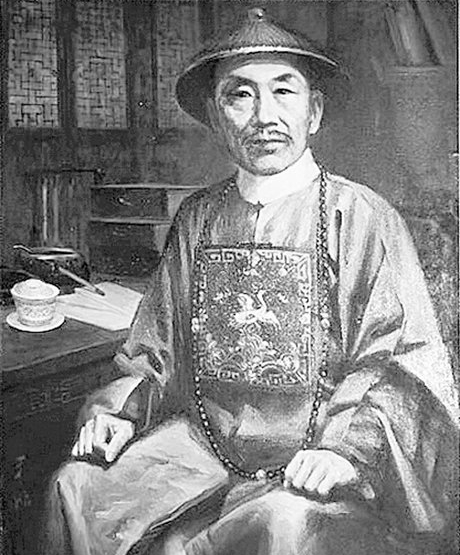
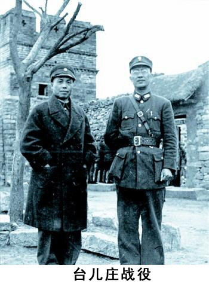
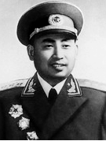
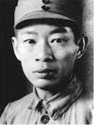
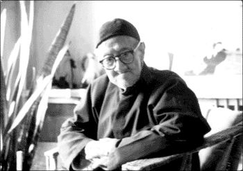

历史人文
桂林历史悠久、人杰地灵、英才辈出
|  | 陈宏谋 (1696—1771) 桂林人。清代雍正元年(1723)春，中恩科乡试第一名举人。同年八月中会试第108名，殿试又中三甲第9名进士。乾隆年间，官至吏部尚书、东阁大学士、太子太傅等职。陈宏谋一生致力发展生产，不畏权贵，为人民做了不少好事，他穷其一生著书立说，对后世影响很大。故居原有众多厅堂馆舍，现仅存陈氏家祠、陈氏宗祠。从陈氏家谱记载，自陈宏谋起到陈数功止的190年间，陈家中科举者计有状元1名，翰林2名，会元1名，进士4名，解元2名，举人26名，贡生9人，可谓盛极一时。 |
 |
马君武（1881—1940） 桂林人，生于恭城。民主革命时期的政治活动家、教育家、爱国诗人。早年就读于体用学堂，后留学日本和德国，是中国留学生取得工学博士学位的第一人。他追随孙中山先生进行革命活动，先后任总统府秘书长、广西省长、上海大夏大学、中国公学、北京工业大学和广西大学等校校长。马君武学识渊博，懂英、法、德、日四种外语，翻译过许多世界名著和工程技术等专著，为我国近代科学技术发展，为祖国培养造就人才作出了贡献。 |
|  | 李宗仁（1891—1969） 字德邻。桂林人，汉族。中国国民革命军陆军一级上将，中国国民党内“桂系”首领，曾任中华民国副总统、代总统。抗日战争爆发，李宗仁任第五战区司令长官，取得台儿庄大捷，这是对日抗战爆发后中国军队首次于正面战场取得的重大胜利。1948年国民党行宪，当选副总统。蒋介石下野后，一度任代总统，欲以和谈挽救国民政府未果。之后出走美国，但最终偕夫人郭德洁于1965年7月经瑞士、中东回到北京，受到毛泽东及其他中共领导人热烈欢迎，于1969年1月30日在北京逝世。 白崇禧（1893—1966） 字健生。桂林人，回族。中国国民党军事家，桂系军阀首领之一，国民党军陆军一级上将。1916年保定陆军军官学校毕业。1923～1925年任广西讨贼军参谋长，北伐战争期间，任国民革命军副参谋总长。抗日战争中任军事委员会副参谋总长兼军训部部长，参与指挥台儿庄会战和武汉保卫战。1939年率部在广西昆仑关予日军以重大打击。1946年5月任国防部长，1948年任华中军政长官，率部顽抗，企图阻止中国人民解放军进军中南。次年，所部在湖南、广西被歼后去台湾。后任台湾“总统府”战略顾问委员会副主任委员，国民党中央执行委员、常委等职。 |
|  | 李天佑（1914—1970） 桂林人。中国人民解放军上将。1929年10月加入中国共产党，同年12月参加百色起义，先后任中国工农红军第7军排长、连长，参加开辟和保卫右江苏区的斗争。抗日战争全面爆发后，任八路军第115师343旅686团团长。解放战争时期，历任北满军区参谋长、松江军区司令员等职。中华人民共和国成立后，历任广西军区副司令员、司令员，广州军区第一副司令员、代理司令员，人民解放军副总参谋长，中共中央军委委员。1934年荣获三等红星奖章，1955年被授予上将军衔，荣获一级八一勋章、二级独立自由勋章、一级解放勋章。1970年9月27日因病在北京逝世，年仅56岁。 |
|  | 周子昆 (1901年—1941年)，原名周维宽，字仲和。桂林人。周子昆是中国工农红军和新四军高级指挥员。北伐时期，参加过汀泗桥、贺胜桥战役，屡立战功，升任连长、营长。1927年参加南昌起义，1928年1月参加湘南起义。红军时期，历任中国工农革命军红3军参谋长、军长，红5军团参谋长等。抗战时期，任新四军副参谋长、中央军委新四军分委委员，与叶挺、项英等领导建立华中敌后抗日根据地。1941年1月上旬，蒋介石调集8万大军伏击我新四军军部和直属部队，制造了震惊中外的皖南事变。周子昆与叶挺、项英等率部浴血奋战七昼夜，终因弹尽援绝被迫分散突围。周子昆等突出重围后隐蔽在大观山上，3月13日深夜被叛徒杀害于泾县赤坑山蜜蜂洞内，时年40岁。 |
|  | 梁漱溟（1893—1988） 原名焕鼎，字寿铭，桂林人，生于北京，历任南北统一内阁司法总长秘书、广州政治分会建设委员会主席、中国民主政团同盟中央常委、全国政协常委、宪法修改委员会委员、中国孔子研究会顾问、中国文化书院院务委员会主席等职。是著名的爱国民主人士、享誉国内外的学者、著名哲学家、教育家。自称为“儒家”。发表过大量有影响的著作。新中国成立后，在关于总路线的争论、《立法草案》的讨论及批孔等重大问题中，坚持真理，直言无惧，人生坎坷，宠辱不惊，表现了光明磊落的高尚品质、卓立史册的“儒家风范”。曾4次到桂，1992年由香港回桂3年，期间曾受邀到汉民中学讲课。（穿山南、北麓曾为汉民中学校园）。其墓位于桂林市七星区穿山公园穿山西麓。 |
20211257013电子商务杨创任